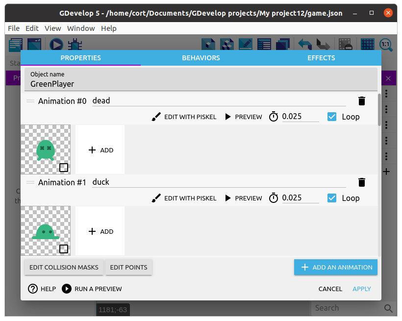
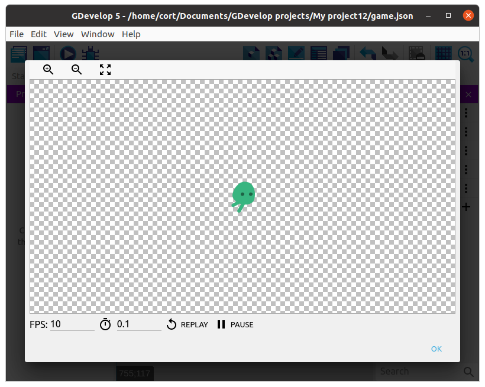
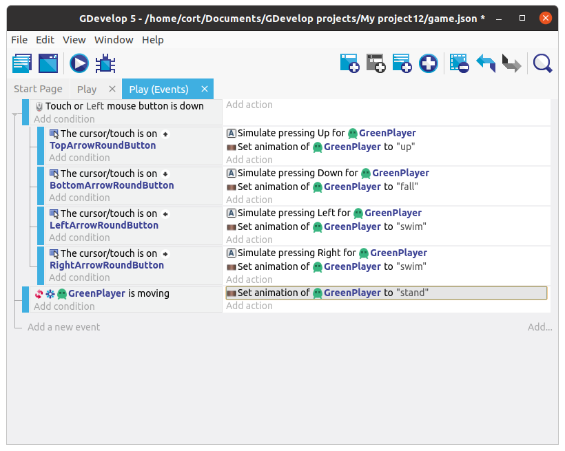
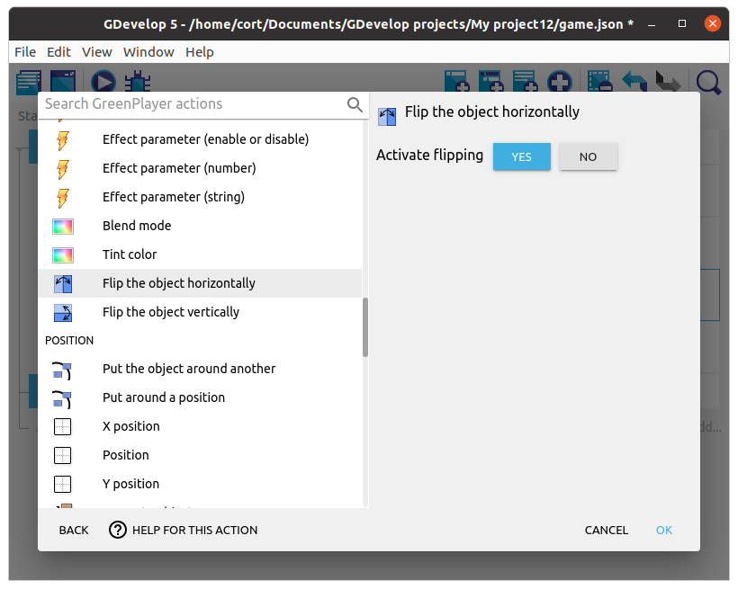

Animation
The player character we've selected comes with 10 animations, but currently, we are only seeing the first dead animation (...which only has a single image, so it's not actually animating at all).
To do that, we'll need to add a new Change animation action, but first, let's check out what animations we have available.
Double click the player to open its object window. You should see a list of 10 animations.

You can preview the animation using the preview button, try it now with #6 swim animation. If it looks like it's too fast (...it is), change the FPS until it looks right. I think an FPS of 10 looks good, but it's your game, so you decide.

I'll be using the #6 swim animation for left and right movement, the #8 up animation for up, and the #2 fall animation for down. Make sure the animation FPS is ok for all of these.
Change Animation
Now we'll need to change the animation depending on which direction the player is moving towards. We'll make use of the sub-events that we have already created (...the ones with the Simulate pressing actions), and add an additional Change animation action.
Click on the Add action under Simulate pressing Up. Select the player, then choose the Change the animation (by name) action. Under Animation name type in "up" (...including the double quotes and make sure it's in the correct case). Click Ok

Continue adding the Change animation action for the remaining controls. When done, your event tab should look like this...

Idle and Flip
If you test it out now, you'll notice two problems.
- Player continues using the last animation even when nothing is pressed.
- Player faces the wrong direction when moving left
To fix the first problem, we'll switch to the stand animation if the player isn't moving.
Start by adding a new event (...not a sub-event), and click on Add condition. Select the player, then the Is moving condition. Since we want to perform the action when the player is NOT moving, we'll need to Invert the condition.

Under the action, add a Change the animation (by name) action and set the Animation name to "stand". It should now look like this...

Next, we'll need to flip the player around when moving left.
Add a new action under the move left event, click on the player, then select the Flip horizontally. Under Activate Flip, select Yes.

Now do the same for the move right event, but set Activate Flip to No. Your events should now look like this...